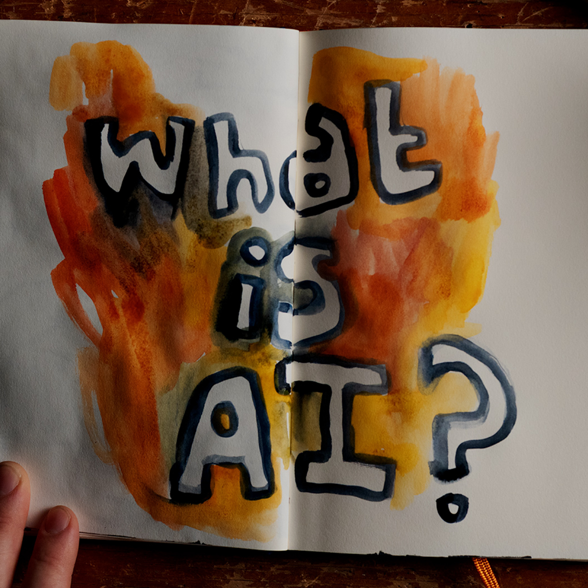

The AI Doc: Or How I Became an Apocaloptimist
Apocaloptimist: Someone who takes the severe risks of AI into consideration whilst still holding hope for a positive outcome.
The AI Doc: Or How I Became an Apocaloptimist is a documentary about a man who is soon to become a father and is worried about the life his child will have, if any, as AI becomes more and more powerful. He sets out to ease his worries by interviewing dozens of experts on AI.


Demis Hassabis
Leader
- Awarded Commander of the Order of the British Empire
- Nobel Prize in Chemistry
"I've always believed in the power and potential of advanced AI to accelerate scientific discovery and greatly benefit society," Isomorphic Labs
Connor Leahy
Safety & Risk Researcher
- Reverse-engineered ChatGPT-2 overnight
- Founded Conjecture
"AI is not a weapon, it is an adversary threatening humanity," Democracy Now!
David Evan Harris
Ethics, Fairness, & Critic
- Advises governments on tech policy
- Founded the Global Lives Project
"I'm not confident in even their ability to deal with the old types of threats," CNN

Tristan Harris
Commentator, Journalist, & Thinker
- Starred in "The Social Dilemma"
- The closest thing Silicon Valley has to a conscience
"If you're not paying for the product, then you are the product," The AI Doc
Guillaume Verdon
Optimist & Accelerationist
- Co-created TensorFlow Quantum
- Spearhead of e/acc, "effective acceleration"
“I don't think AI is going to kill us all. I think that sort of thinking is more dangerous than the AI itself,” The New York Post
| Name | Danger of AI | Speed of Innovation | Helpfulness of AI | Impact of AI |
|---|---|---|---|---|
| Demis | Mild Danger | Fast Innovation | Very Helpful | Massively Good Impact |
| Connor | Extreme Danger | Slow Down or Stop AI | Very Unhelpful | Very Bad Ending |
| D. Evan H. | Some Danger | Careful Innovation | AI is Helpful | Depends on Precautions |
| Tristan | Very Dangerous | Careful Innovation | AI is Helpful | Depends on Precautions |
| Guillaume | Danger from People | Fast as Possible | Incredibly Helpful | Overwhelmingly Good Impact |
| Before watching The AI Doc | After watching The AI Doc |
|---|---|
| Neutral view of AI | Apocaloptimist view |
| Wary of AI | Wary of people creating AI |
| Unaware of dangers or benefits of AI | Aware of both dangers and benefits of AI |
| Unclear future with AI | Kaleidoscope of futures with AI |
| Unknown timeline of AI innovation | Estimated timeline of innovation |